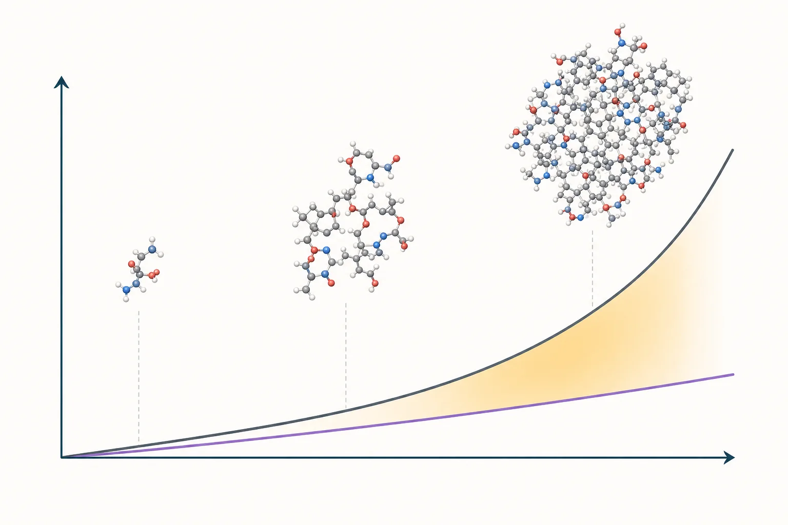
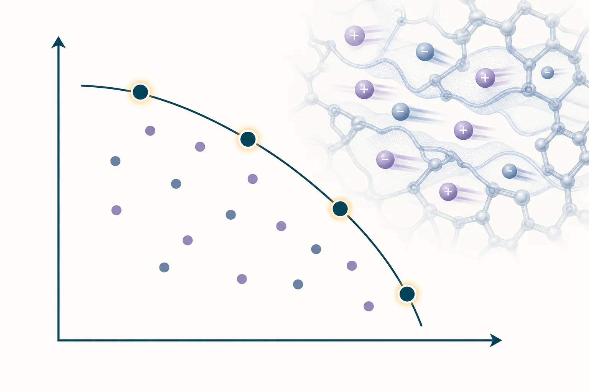
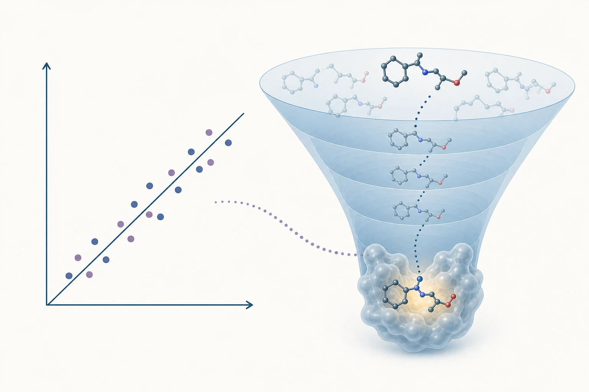

Four connected directions in molecular computation and predictive design.

Computational cost ↑System size →
Scalable Molecular Simulation
Molecular simulations provide detailed atomistic insight into complex molecular processes, but realistic simulations can be expensive in time, energy, and computing resources. We develop data-driven, statistical-mechanical, and geometry-based methods to accelerate molecular simulations and rare-event sampling. Our goal is to make atomistic simulation sufficiently efficient and scalable for high-throughput molecular discovery.

Ionic conductivity ↑Cation transference number →
Energy Materials by Design
Reliable and efficient energy storage is essential for broader adoption of renewable energy. We combine data-driven methods, molecular simulation, and quantum calculations to understand transport, structure, and stability in energy-storage materials. Our goal is to design new materials for electrical and thermal energy storage with targeted properties.

Predicted ↔ experimentalMolecular docking funnel
Physics-Informed Drug Discovery
Designing molecules that bind selectively and strongly to a biological target remains a major bottleneck in drug discovery. We combine physics-based molecular simulation with data-driven models to improve molecular screening, scoring, and design. Our goal is to develop robust computational approaches for efficiently discovering and optimizing new drug molecules.
Spin-active solid-state defects are promising building blocks for quantum technologies, but controlling their formation requires an atomistic understanding of defect dynamics. We develop defect-specific machine-learning interatomic potentials that approach ab initio accuracy at substantially lower computational cost. We use these models to investigate defect formation, migration, stability, and strategies for their selective creation.